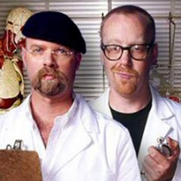

Cazadores de Mitos
 De: La Frikipedia, la enciclopedia extremadamente seria.Jamie y Adan son una pareja homosexual la cual se folló a los directivos de Discovery Channel(lease Coco Channel) para poder tener un programa en el cual se dedican a la verificación de mitos de corte sadomasoquista usando a un muñeco inflable llamado Buster para sus pruebas. Aunque parezca mentira este programa ha recibido una gran acogida por los televidentes, en su mayoria gente gay y/o personas que les gusta ver a dos señores torturando un muñeco sin ningun sentido.
De: La Frikipedia, la enciclopedia extremadamente seria.Jamie y Adan son una pareja homosexual la cual se folló a los directivos de Discovery Channel(lease Coco Channel) para poder tener un programa en el cual se dedican a la verificación de mitos de corte sadomasoquista usando a un muñeco inflable llamado Buster para sus pruebas. Aunque parezca mentira este programa ha recibido una gran acogida por los televidentes, en su mayoria gente gay y/o personas que les gusta ver a dos señores torturando un muñeco sin ningun sentido.
 Como se puede notar por la cara de Adam esta sufriendo de un orgasmo a causa de que unos minutos antes de la foto tuvo una fantasía sexual con Buster
Demás asistentes
Estos dos, no actuan solos, tienen a un maniquí transformer que utilizan para todos sus experimentos. Éstos son del tipo meter a Buster, que es como se llama el maniquí, en un ascensor y dejarlo caer ocho pisos (probadlo) o bien, meterle en un coche y tirar el coche desde una giganogrúa gigante transformer para ver como queda la cosa...
También está Grant Imahara, un japonés conocido por ser campeón de Robot Battle. Mola porque su robot era una especie de plancha con una maza que daba golpes a los otros robots y los dejaba desechos.
Bueno, y otros menos importantes, Kari Byron (La del pelo naranja, intento de sex appeal del programa), Scottie Chapman y Tori Belleci (El rubito).
Lo que suelen hacer
"Normalmente" intentan desmentir un mito (como el de que los tanques de gasolina de los carros explotan cuando los disparan) y lo ponen aprueba mientras que Tori y el resto de gente hacen cualquier gilipollada (mito menor, o sin importancia, como el jabon de cocina mata hormigas, os si el petrolato de potasio sodico puede envenenar a un buzo ciego mientras vuela en un dodo) mientras Adam y Jaime tienen sexo del duro y del rico mientras que Buster los graba con una camara hecha con condones compruevan la validez del mito anterior,
Secuencia Subnormal de un capítulo
- Adam y Jaime intentan desenmascarar el mito de un punto de vista, algo explota
- Tori y compañia hacen una gilipoyes de la cocina, fallan
- comerciales
- comercials
- más comerciales
- Adan y jaime descubren que el mito es una farsa, algo explota, lo vuelven a mostrar, Adam da un comentario, explota por enésima vez
- Tori y compañia atacan el mito (literalmente) desde otro punto de vista, fallan catastróficamente
- comerciales
- comerciales
- más comerciales
- y algo explota sin motivo aparente nuevamente.
Aqui la vaina se jode un poco:
Variable A:Adam y Jaime cazan el mito, Tori y compañia fallan
- comerciales
- (algo explota)Adam se
pone cachondo y jaime tambien, la peliroja no quiere pero la convencen y a buster le hjace un hueco con un taladro, luego todos tienen una orgía y son muy felices hasta que se dan cuenta que jaime les ha pegado el sida, al cabo de 10 meses, mueren emociona y pide una repeticon y tori y compañia fallan y se quedan muy apenados y se compran un consolador regresan al taller y Todo el grupo de marginados sexuales cazadores de mitos discuten sobre el mito al final pasan los creditos, comerciales, comerciale, comerciales y luego "¿cómo lo hacen?" (apesar del nombre no es p0rn0)
Véase también
Autor(es):
- Nexo
- Roms
- Nadaquever
- Alzombie
- RiuKiu
- Manamaster
- Dynamo
- Sygma
- Genericool
- Volver al futuro 2
Frikipedia 2005-2016, Licencia
GFDL 1.2 - Extraído por FrikiLeaks